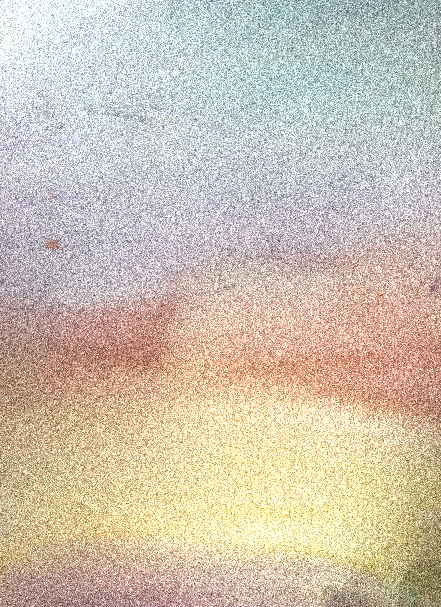
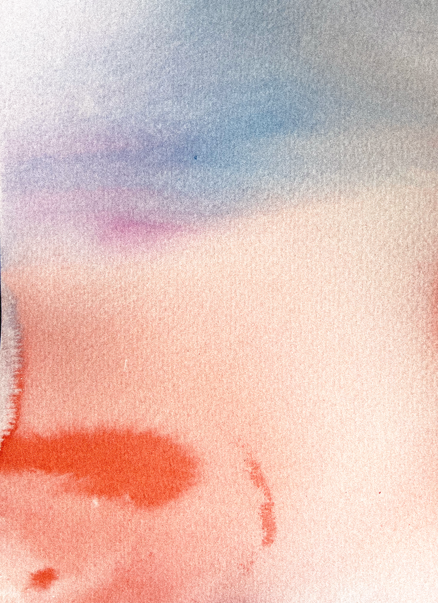

Journal
AS SHE PLEASES
Notes on home, place, and the quiet rituals that make time feel like your own.
Latest notesThree stories
 Home
A balcony, a curtain, the kettle in the kitchen—the rooms a woman keeps for herself.
Read note
Home
A balcony, a curtain, the kettle in the kitchen—the rooms a woman keeps for herself.
Read note

Urban landscape A street in last light, a window open above a courtyard, the city catching its breath. Read note
Soft landscape Long grass and shoreline, the air still cool—the slow openings of a day. Read note